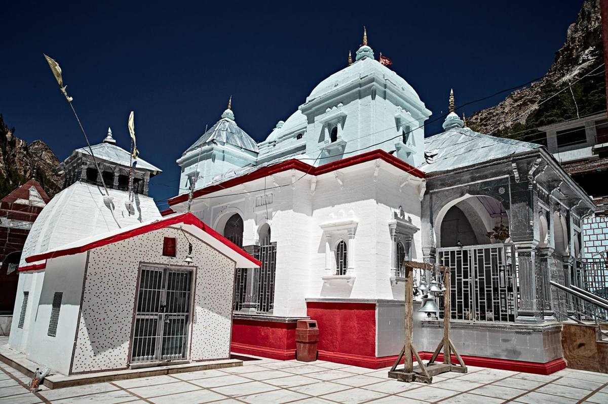

About तीर्थ & Trails
तीर्थ & Trails Co. is a Haridwar-based spiritual travel company dedicated to crafting seamless, meaningful, and modern pilgrimage experiences across India's most sacred landscapes.
We believe every pilgrim deserves a stress-free, well-organized journey — where the only thing on your mind is the divine. From the mighty Char Dhams to the rare corridors of Adi Kailash, we design every journey with devotion, comfort, and authenticity.
Our ground network spans Uttarakhand, Himachal Pradesh, Rajasthan, and South India, with trusted local partners handling all logistics while our team manages your complete booking experience.
“Where the Path Becomes the Prayer” — our promise to you.
“The entire Char Dham yatra was organized flawlessly. Kedarnath at sunrise — a moment I'll carry forever.”
“We were a family of 8 with two senior citizens. Prince ji personally ensured wheelchair at Yamunotri. Exceptional care!”
“Panch Kedar was my bucket list item. Tungnath at golden hour — indescribable. The team's mythology knowledge added so much depth.”
“First-time pilgrim — the WhatsApp response was instant, every query answered in minutes. Like travelling with family.”
“Witnessing the OM naturally on Om Parvat moved me to tears. All Inner Line Permits handled seamlessly.”
“Corporate group of 20 — Kedarnath helicopter was seamless, logistics flawless. Already planning next year!”
Your safety comes first
Your safety is our highest priority. Please read before your yatra.
Health & Medical
- Consult a doctor before travel above 3,000 m
- Cardiac / BP conditions — carry a medical certificate
- Stay hydrated; avoid alcohol at high altitudes
Weather Preparedness
- Mountain weather is unpredictable — carry rain gear
- Watch for flash flood warnings Jul–Aug
- Never trek alone; always inform your guide of your location
Altitude Safety
- AMS: headache, nausea, dizziness — descend immediately
- Never ascend with symptoms
- Oxygen cylinders at base camps
Emergency Contacts
- Police: 112
- SDRF Uttarakhand: 9454417650
- Our emergency line: +91 73874 07857 (24×7 during yatra)
Temple Etiquette
- Remove footwear before entering temples
- Dress modestly; photography is prohibited inside the Garbha Griha
Eco Travel
- Reusable bottles; avoid single-use plastic
- Do not litter; respect local customs